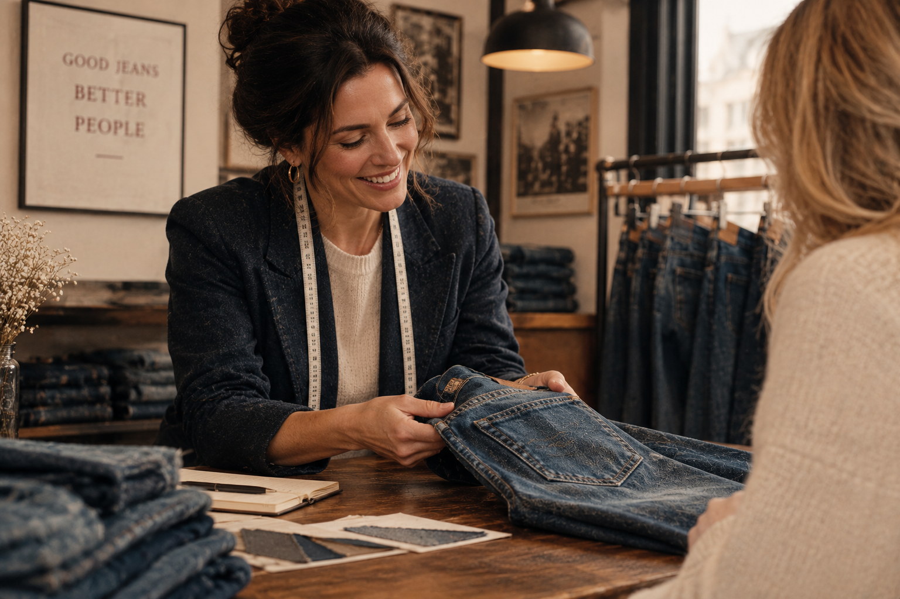

Die passende Passform
Gemeinsam finden wir einen Schnitt, der zu Ihren Wünschen und Ihrem persönlichen Stil passt.
PERSÖNLICH STATT BELIEBIG
Jede Jeans sitzt anders. Deshalb nehmen wir uns Zeit, gemeinsam mit Ihnen die Passform zu finden, die zu Ihnen und Ihrem Alltag passt.
Machen Sie einen Termin mit uns aus
UNSER ANSPRUCH
Ob klassisch, lässig oder modern – entscheidend ist, dass Sie sich in Ihrer Jeans wohlfühlen.
Wir unterstützen Sie dabei, unterschiedliche Schnitte, Materialien und Passformen zu entdecken. Mit Erfahrung, einem offenen Ohr und einer ehrlichen Empfehlung.
Gemeinsam finden wir einen Schnitt, der zu Ihren Wünschen und Ihrem persönlichen Stil passt.
Lernen Sie verschiedene Waschungen, Materialien und zeitlose Jeansklassiker kennen.
Bei uns stehen Sie im Mittelpunkt – mit persönlicher Beratung und Empfehlungen, die wirklich zu Ihnen passen.
IHR NEUES LIEBLINGSSTÜCK WARTET